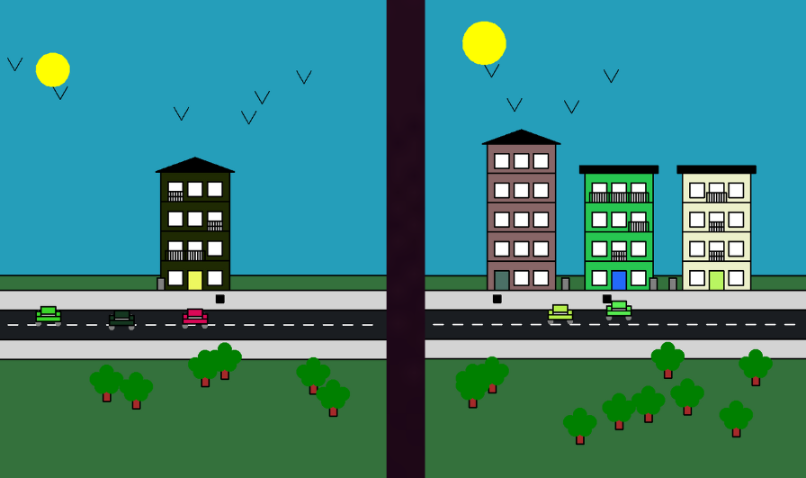
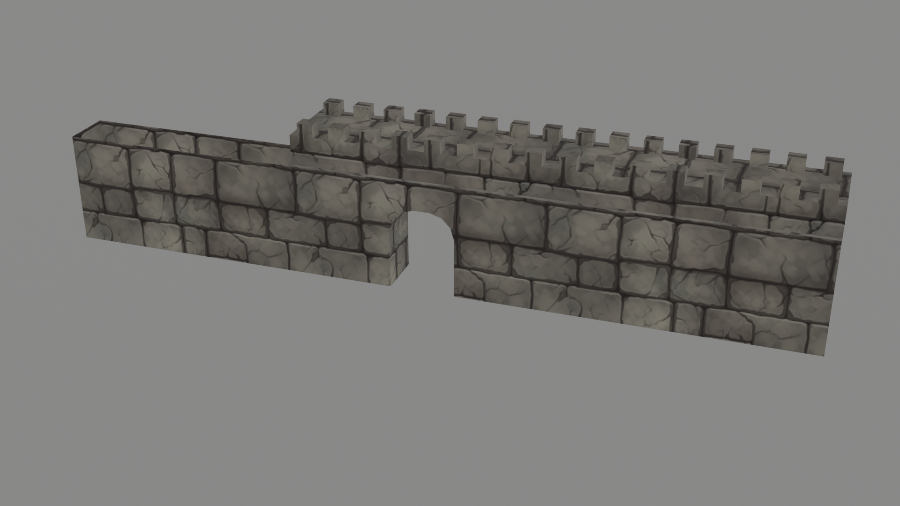

jeux vidéo
Dungeon Haven
- J'ai eu une première expérience de conception de jeu en groupe avec des masters dans le cadre de l'ENJAM, la GameJam annuelle de l'ENJMIN.
- J'ai appris les différentes étapes de la conception d'un jeu, les différents corps de métier et j'ai développé mes compétences en level design, en game design et en programmation sur Unity. Enfin j'ai appris les bases du métier de sound designer.
- Outils : Unity
- Langage de programmation : C#
- Temps : 3 jours
- Page itch : Dungeon-haven.itch
- Code du jeu : Dungeon-haven.GitHub
(En groupe)
Mars 2
- Mon premier projet inter-Licence au sein du CNAM Enjmin à Angoulême. Un petit jeu de gestion dans lequel on gère une colonie alienne et où on doit faire augmenter la barre de prospérité de celle-ci. J'ai aidé principalement à la création de l'UI, du level design, du GameManager et à la gestion des personnages.
- Outils : Unity
- Langage de programmation : C#
- Temps : 1 semaine
- Page itch : Mars2.itch
- Code du jeu : Mars2.GitHub
(En groupe)
Editeur de perso 3D
- Un projet de Jam réalisé en deux semaines dans le cadre de mes cours au sein du CNAM Enjmin. J'ai réalisé la totalité de la partie programmation du projet et j'ai été aidé par deux artistes qui ont réalisé les assets visuels du personnage, du menu, de la skybox ainsi que du piédestal qui supporte le personnage.
- Outils : Unreal
- Système de scripting visuel : Blueprint
- Temps : 2 semaine
- Page itch : EditeurPerso3D.itch
- Code du jeu : EditeurPerso3D.GitHub
(En groupe)
Platformer 2D
- J'ai créé mon premier platformer 2D à l’aide de tutos YouTube et j'ai apprie à maîtriser le C# ainsi que Unity.
- Outils : Unity
- Langage de programmation : C#
- Temps : 7 jours
(En solo)
Space invaders game
- J'ai appris à utiliser PyGame et j'ai essayé de créer un premier jeu vidéo en Python afin de m'entraîner et de développer mes compétences en utilisant de nouveaux modules.
- Outils : Thonny
- Langage de programmation : Python
- Temps : 12h
(En solo)
1er projet unity
- J'ai créé un premier projet Unity afin d'apprendre les bases du moteur de jeux à l'aide de tutos YouTube, et j'ai testé des idées qui me sont passées par la tête afin de m'entraîner.
- Outils : Unity
- Langage de programmation : C#
- Temps : 4h
(En solo)
projet de groupe NSI

- J'ai fais un projet Python en groupe afin d'apprendre à m'organiser en codant à plusieurs et j'ai appris à utiliser le module Turtle.
- Outils : Thonny
- Langage de programmation : Python
- Temps : 3h
(En groupe)
Assets
projet de groupe Village fortifié 3D

- J'ai fais un projet de groupe où on devait réaliser un village fortifié à l'aide d'assets qu'on devait réaliser nous même sur blender dans le cadre de mes cours au sein du CNAM-ENJMIN. Voici ce que j'ai pu réaliser.
- Outils : Blender
- Temps : 3h
(En groupe)